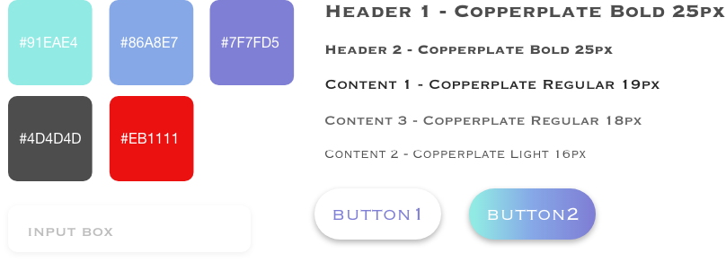
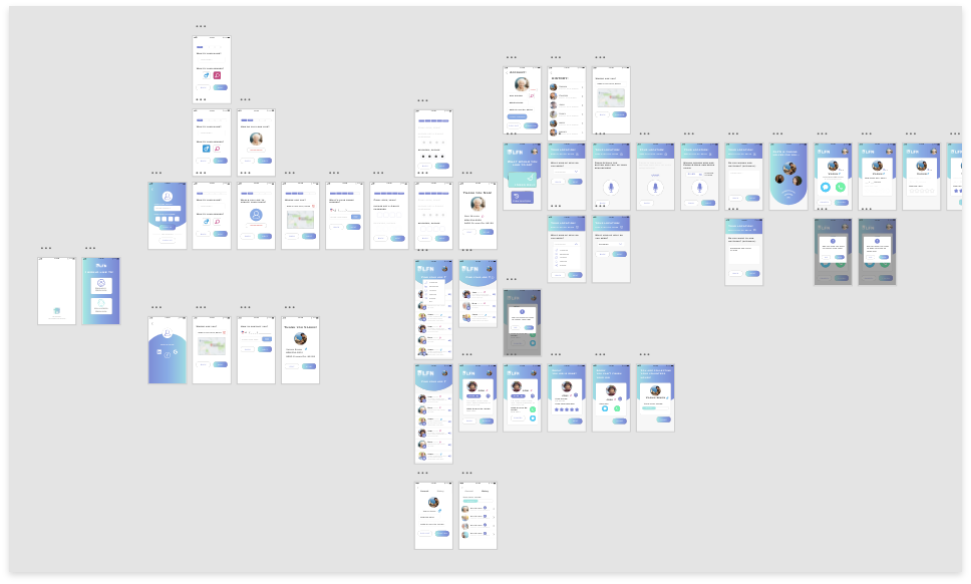
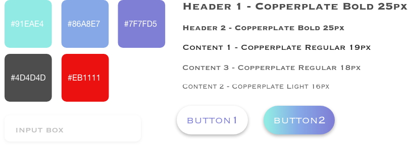
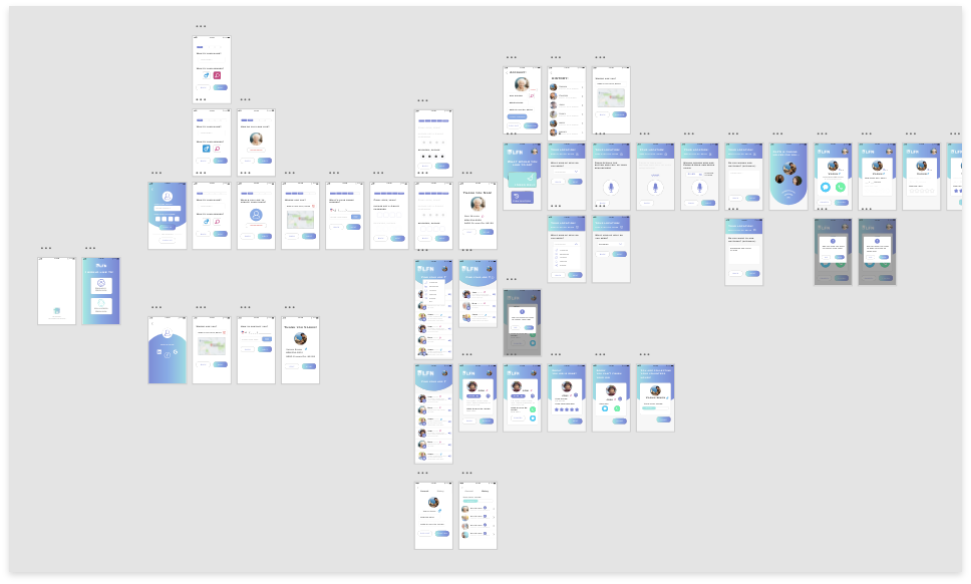

Design Lead, UI/UX design
2 month
Bryon Taylor, Yadi Deng, Ming Xie, Sasri Dedigama Andrew Nguyen, Arman Kazi, Nick Anguiano
Adobe XD, Illustrator, draw.io, After Effect
An user-friendly app that provide instant services to seniors
Taking care of old people is an significant issues in society. Research shows that millions of senior citizens live alone without anyone taking care of them. They face different kinds of difficulties during their daily life. For example, they need someone to help them carrying their heavy groceries, or they want somebody to talk with them. However, they don’t have a good solution when they face such predicament. On the other hand, students in high school need some opportunities to improve their experiences in volunteering. Taking care of seniors is a great activities for them to take. However, they don’t have many platforms to connect with senior citizens.
By designing a user-friendly app for seniors, people who want to be volunteers can provide services for old people who are in need. Let’s watch our commercial video and get some ideas of how this app works.
Our next task after team formation and logo design was to embark in sketching. In order to generate solutions/ opportunities, we composed ten individual stories that focused on elderly folk (target demographic, 50+) and technology into a list. These stories are either hypothetical or from personal experience, and they are our first step in the ten plus ten method which we are using to generate design concepts. This task also allowed us to identify problems and potential solutions which we discussed and reduced to common themes we might target in our design.
In order to understand the current situation of students in middle school and high school, and their views about being volunteers. We contacted with our nearby school Preuss School UCSD and send a short survey to students.In the survey, we asked about their volunteering experiences during school, and their views about taking care of senior citizens. We received about 50 responses, and we collected these data and make some conclusions. We found out that students in Peruses School of UCSD are actually required to participate in volunteering during their vacation. And they are willing to provide services to old people in order to collect volunteer hours. Also, they don’t have a platform for them to connect with seniors right now.
We then conducted several interviews with senior citizens in San Diego. We talked about their daily life, and the difficulties they are suffering everyday. We also talked about some technologies problems that they may facing, for example, we asked several questions in order to know how they are familiar with technologies, especially phone. We want to know whether they know how to use some simple apps to achieve their goals. After interviews, we had a better understanding of the life of seniors.
Building on our previous interviews and surveys, we came up with general problems that people of older generations face, we created storyboards for specific personas that would potentially be using our application to solve their individual issues. Although there was a wide range of concerns we tried to address, the majority of our group members envisioned an app that would connect users with other community members to provide companionship in various ways to combat feelings of loneliness.
We also conduct competitor analysis in order to make sure our idea of making an service providing app is feasible. We choose four popular apps that have similar ideas of app. By analysis their pros and cons, we found out our advantages.
Based on surveys and interviews results, with the analysis we made, the final outlines of our app is settled down. We decided to build a two ends platform for both old generations and student volunteers. We provide services for them to connect with each other based on the services. The image below shows how it works.
As a group were came to an collective agreement that we would choose dolphins as an animal. We then dropped the vowels in th word dolphin and replaced the “ph” with an “f” to make it more unique and add a silicon valley-ish quality. The teams in our design classes did a number of things including reviewing our logo sketches, deciding, as a team, on which one we would use going into the actual project and then even redoing our logos with more professional tools like Adobe Photoshop.As you can see, many of our logos have some form of dolphin in them, but we wanted a better way to have a dolphin the logo without just putting a dolphin drawing in there. This lead us to land on the design you see immediately to the left. This design doesn’t rely on color, is easily scalable and we even have a small “icon” version for very small screens and devices. This logo captures all this while still capturing the dolphin in the letter ‘D’ of the logo.
Considering the issue that senior people are not so familiar with technology, we try to reduce the tasks of using this app. We encourage senior people to using voice message as the major way of requesting services. By following the simple and straight forward user flow they can get help in seconds.
After confirm the main user-flow, we started to skech the interface. In order to make a user-friendly app for seniors, it is significant that they don’t need to think too much when using this app. So we try to minimize the contents on each pages. If possible, we make the app “one action for one page”. In this way, old people don’t need to make too many decisions. After skeching, we started wireframing the interfaces follow the user-flow. After that, we got the basic whole-picture of this app.
In order to make sure our direction is correct, we develop a Lo-Fi prototype with just contents and basic layouts. Users can get basic ideas of how this app works. We wanted to collect some feedbacks on our working flows, designs and ideas. In this way, we can modify our app to ensure every details are considered. About 20 users tested our Lo-fi prototype and gave us many valuable feedbacks. By analysis these feedbacks, we can bring our products into next level.
“ I really like your ideas of using bigger fonts and less content.
However, some processes seem too long, like sign up process
for seniors.”
“The process of posting a job is a little bit
confusing and misleading.”
We come up with two styles of design. One with gradient color on the background, which is more colorful. While the other one contain more white color. This one looks cleaner. We asked several people to test these two versions of design and made a vote. The results show that they like the cleaner version better, especially tester with high ages. It is reasonable for us to choose white background design since we should make as less distraction as possible for seniors. Too much unnecessary color in design may make them feel stressful.
 



This is a challenging project since it focus on specific group of people — seniors. In order to provide best experiences for senior users, we need to do subtraction again and again. Adding content is easy, while subtract content is very difficult. In order to find the balance between simple and usability, we need to think about different kinds of situations. Imaging the scenarios of using specific features, and find out the key elements in these features. Also, user testing is significant for a successful product. The real testing feedbacks can show you details that you may neglect during the design process. Not only receiving feedbacks, we also need to analysis these feedbacks and come up with ideas of solving problems. The most important thing we need is to think about your users at any moments of your design processes.
There are still some details that we need to consider and discuss since we just make adjustments based on Lo-Fi user testing. We pointed out some possible issues remained and planned to make some future testing to make sure our guessing is correct.